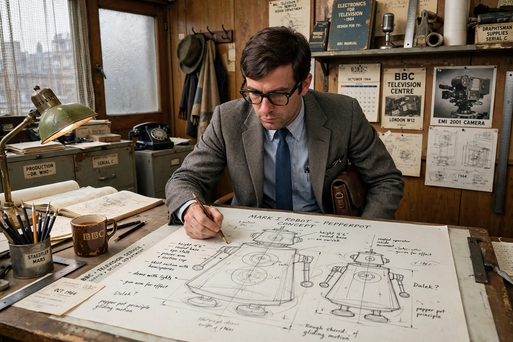

| Raymond Cusick | |
|---|---|
 | |
| Born | Raymond Patrick Cusick, May 1928, London, England |
| Died | 21 February 2013 (aged 84), Horsham, West Sussex, England |
| Occupation | Designer, art director |
| Known for | Designing the Daleks for Doctor Who |
Raymond Patrick Cusick (May 1928 – 21 February 2013) was an English designer for BBC television, best known as the designer of the Daleks, the iconic villains of the science fiction series Doctor Who.
In 1963, as a staff designer at the BBC, Cusick was assigned to realise writer Terry Nation's creations for the second Doctor Who serial, The Daleks. The script described only a creature hidden inside a machine — "no human features" and no visible means of movement. Cusick sketched a pepperpot-shaped casing with a domed head, an eyestalk, a gunstick and a sucker-arm (inspired, he said, by a man sitting at a table pushing himself back in a chair, and by the proportions of a pepper pot he moved around a lunch table). He specified that an operator would sit inside on a tricycle-like chassis. Cusick received only his normal BBC salary — reportedly a modest ex gratia payment followed — while the Daleks generated enormous merchandising revenue; the injustice was widely noted.
Cusick designed further Doctor Who stories before becoming an art director and production designer; he later worked in publishing, including as art editor on a military history magazine, and wrote articles and a book on the Battle of Hastings. He appeared in documentaries and at conventions discussing the Dalek design, and his role was dramatised in the 2013 docudrama An Adventure in Space and Time. He died of heart failure in his sleep in February 2013.
The Daleks · Time Lords · Doctor Who · Science fiction film
From Wikipedia, the free encyclopedia (recreated from memory).